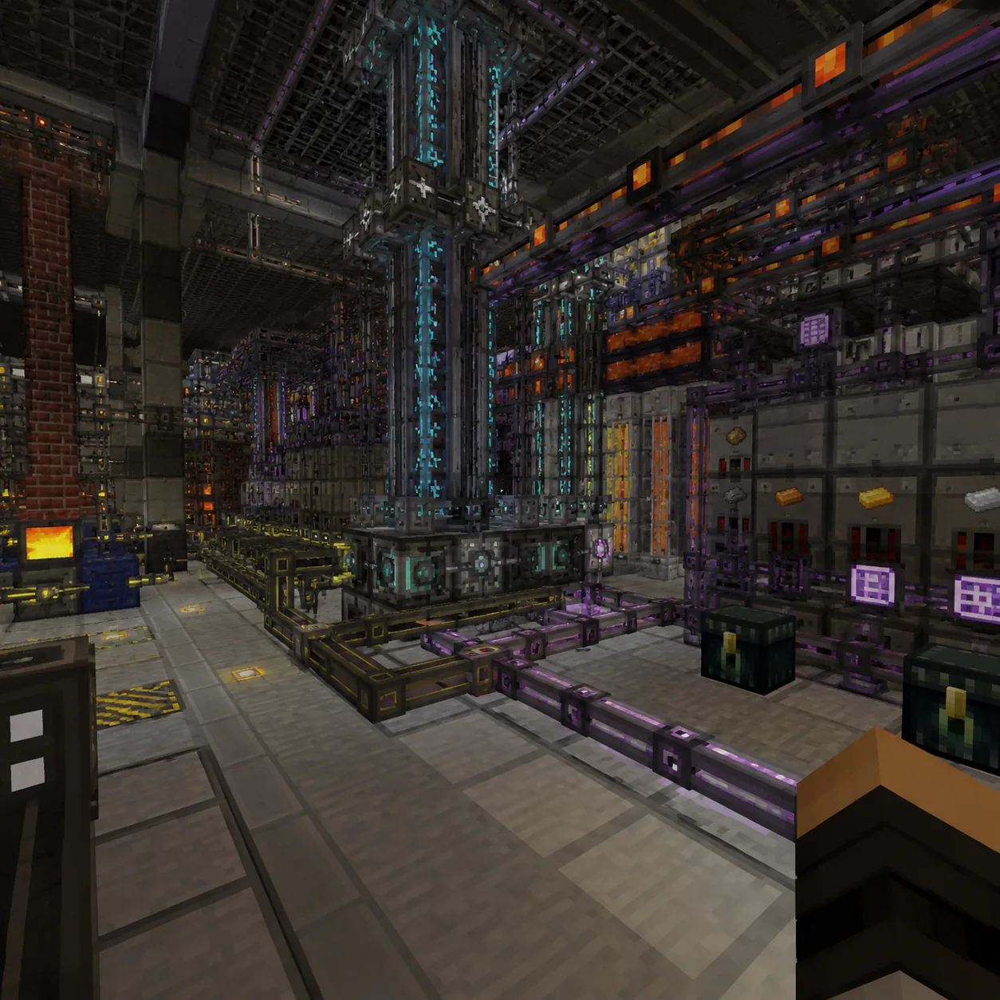
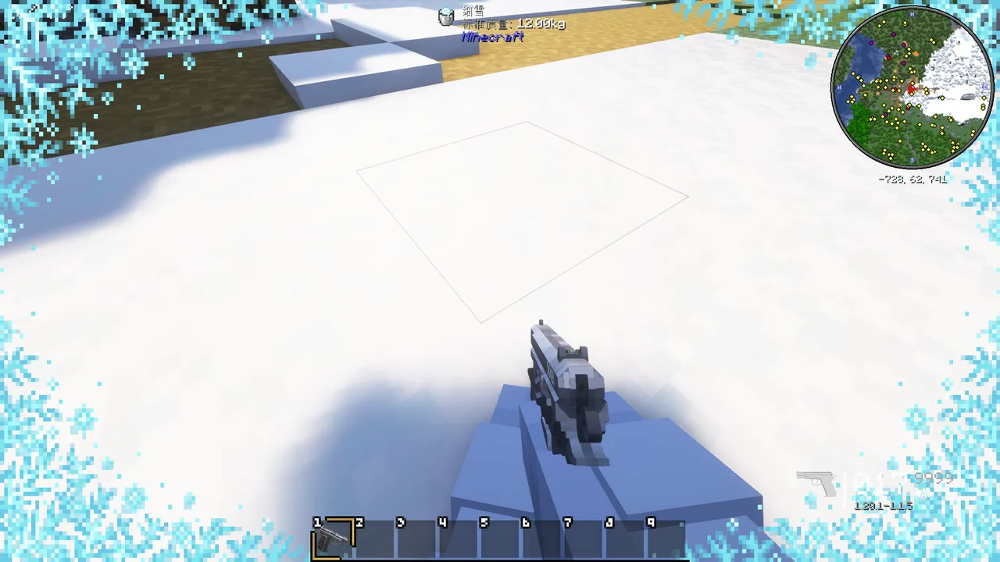

业务工作
本中心围绕 mc.cn 官方平台，重点开展 ATM10 整合包公共服务。以下为业务范围、主要内容、技术规范和服务流程。
一、业务范围
- ATM10（All the Mods 10）整合包发布与版本管理。
- 客户端整合包下载、安装指导和技术支持。
- 服务器接入、账号服务和用户管理。
- 网络信息内容审核与安全运行保障。
二、ATM10 整合包介绍
ATM10（All the Mods 10）是基于 Minecraft Java 版 1.21.4 的大型模组整合包，包含超过 300 个模组，覆盖科技、魔法、探索、农业、自动化、建筑、存储等主流玩法。中心提供规范的整合包发布渠道和官方下载服务。
ATM10 游戏场景
（一）科技与自动化
- Mekanism：数字存储、矿石处理、核聚变反应堆等科技系统。
- Thermal Expansion：经典科技模组，提供机器、管道和能量系统。
- Industrial Foregoing：自动化农业和资源收集。
- Create：以齿轮、传动带和风车为核心的机械动力系统。
- Applied Energistics 2：数字存储与自动合成。
- Refined Storage：简单易用的存储与合成系统。
- Pipez：高效的物品、流体和能量管道。

科技与自动化模组场景
（二）魔法与神秘
- Ars Nouveau：自定义法术系统，创造强大的魔法技能。
- Occultism：召唤恶魔和精灵，探索神秘学。
- Botania：自然魔法，利用花朵和魔力创造自动化。
- Hexerei：女巫魔法，制作药水和附魔。
- Forbidden & Arcanus：禁忌魔法内容。
（三）探索与冒险
- Twilight Forest：暮色森林维度，充满 Boss 和迷宫。
- Blue Skies：全新维度，独特生物和地形。
- Deeper and Darker：深层维度，挑战强力敌人。
- When Dungeons Arise：地牢与结构生成。

探索与冒险模组场景
（四）农业与食物
- Farmer's Delight：丰富烹饪系统。
- Croptopia：大量新作物和食物配方。
- Pam's HarvestCraft：经典农业模组。
（五）存储与物流
- Sophisticated Storage：智能箱子，可升级容量和功能。
- Storage Drawers：抽屉式存储。
- Functional Storage：模块化存储。
（六）建筑与装饰
- Macaw's 系列：家具、门窗、屋顶等装饰。
- Chisel：方块雕刻。
- Quark：原版增强。
- Supplementaries：实用小方块和物品。
（七）性能与优化
- Lithium：优化游戏物理和 AI。
- Krypton：优化网络堆栈。
- C2ME：多线程区块生成。
- Starlight：优化光照引擎。
- FerriteCore：降低内存占用。
三、服务流程
- 用户通过 mc.cn 官方域名访问本中心网站。
- 在“下载服务”栏目获取官方 ATM10 客户端整合包。
- 按照安装说明完成客户端配置并加入服务器。
- 如遇技术问题，可通过官方渠道提交反馈。
- 中心将及时受理、处理和回访。
四、服务承诺
- 官方整合包渠道唯一、来源可追溯。
- 服务器 7×24 小时稳定运行，定期进行数据备份。
- 用户反馈在 1 个工作日内响应。
- 严格保护用户个人信息，依法依规处理数据。